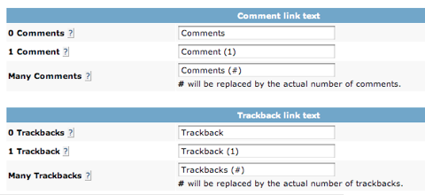

Setting the language for comments
This page refers to the legacy Haloscan commenting system. We are working with the folks at JS-Kit to improve their support of international systems.
The language of comment and trackback link text is not controlled by your site's language. Instead, you must set your preferred language in your Haloscan Settings.
To set the language for comments:
- Go to the Haloscan Settings page.
-
Scroll down to "Comment link text."
 - Enter your preferred wording for the comment link text.
- Repeat for the "Trackback link text."